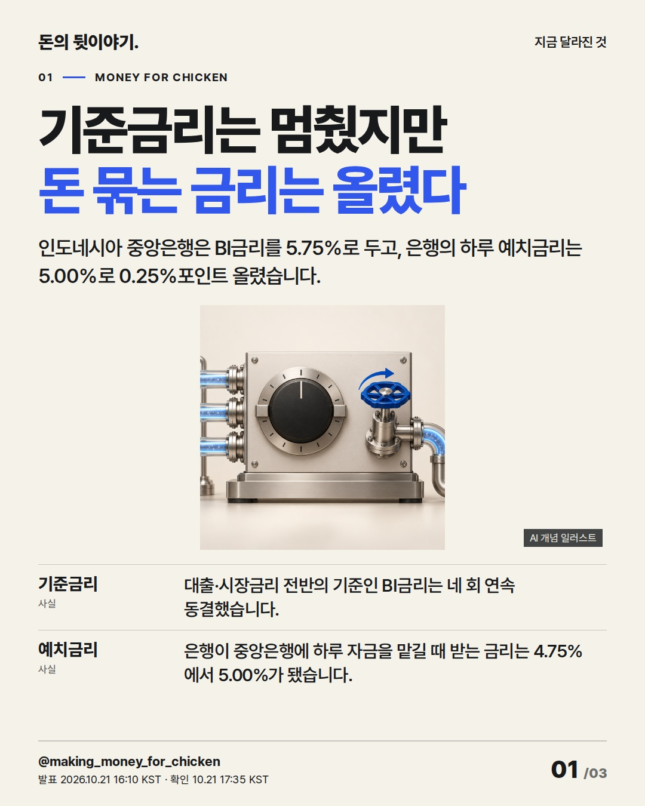
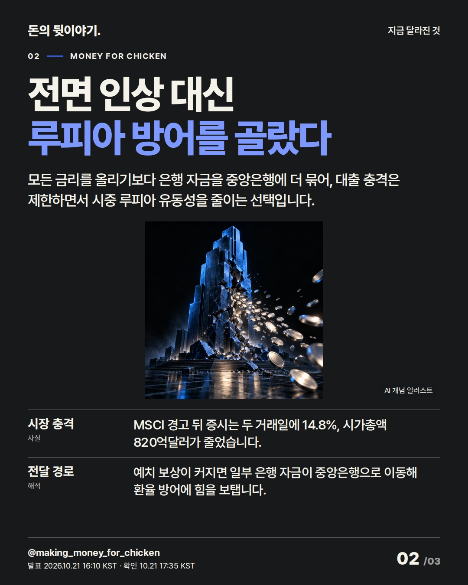
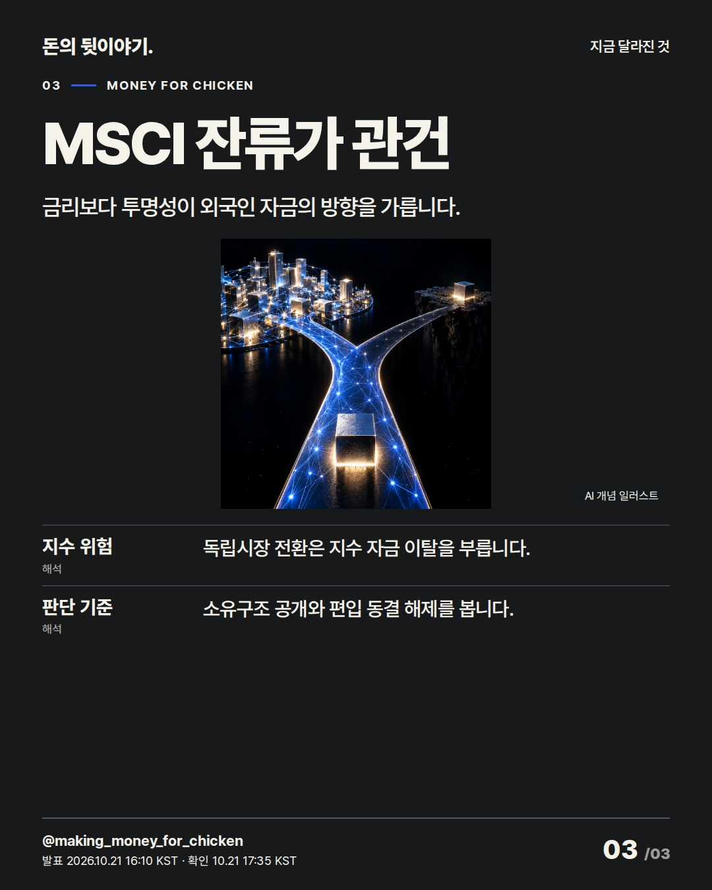

인도네시아는 기준금리를 올리지 않고 은행의 하루 예치금리만 높였습니다. 급락장의 급한 불은 끄되, 자금 흐름을 바꿀 열쇠는 MSCI 잔류 조건인 시장 투명성입니다. #인도네시아 #금리 #신흥국

인도네시아 중앙은행은 BI금리를 5.75%로 두고, 은행의 하루 예치금리는 5.00%로 0.25%포인트 올렸습니다.
AI 생성 개념 일러스트 · 실제 현장이나 공식 제품 사진이 아닙니다.

모든 금리를 올리기보다 은행 자금을 중앙은행에 더 묶어, 대출 충격은 제한하면서 시중 루피아 유동성을 줄이는 선택입니다.
AI 생성 개념 일러스트 · 실제 현장이나 공식 제품 사진이 아닙니다.

금리보다 투명성이 외국인 자금의 방향을 가릅니다.
AI 생성 개념 일러스트 · 실제 현장이나 공식 제품 사진이 아닙니다.
{
"improvement": "최근 5편의 서버·GM·관세·반도체·경기 원고에서 숫자 뒤의 전달 경로가 짧았던 약점을 보완했습니다. 세 장을 금리 결정→은행 자금 이동→지수 자금 이탈의 순서로 연결하고 장마다 다른 이미지를 배치했습니다.",
"reason": "핵심은 25bp 자체가 아니라 기준금리 동결과 예치금리 인상의 분리입니다. GDP·물가·대출성장률과 세부 외환 인센티브는 중심 결론을 흐려 덜었습니다.",
"application": "제목 후보 '기준금리는 멈췄지만 돈 묶는 금리는 올렸다', '인도네시아가 전면 인상 대신 고른 카드', '25bp보다 큰 위험은 신흥국 지수 이탈' 중 결정과 작동 방식을 함께 드러낸 첫 안을 선택했습니다. 2장에 자금 이동 경로를 보강하고, 실제 이미지 검수에서 과밀했던 3장은 결론과 세 확인 기준만 남겼습니다.",
"avoided_repetition": "5.75%와 5.00%는 1장, 14.8%와 820억달러는 2장, MSCI 잔류 조건은 3장에만 뒀습니다. 오늘 오후의 AI 서버·반도체 이슈와 주체·원인·영향·결론이 겹치지 않으며, 최근 표지의 기업명+숫자 문형도 피했습니다."
}투자 참고용 · 매수·매도 권유 아님.